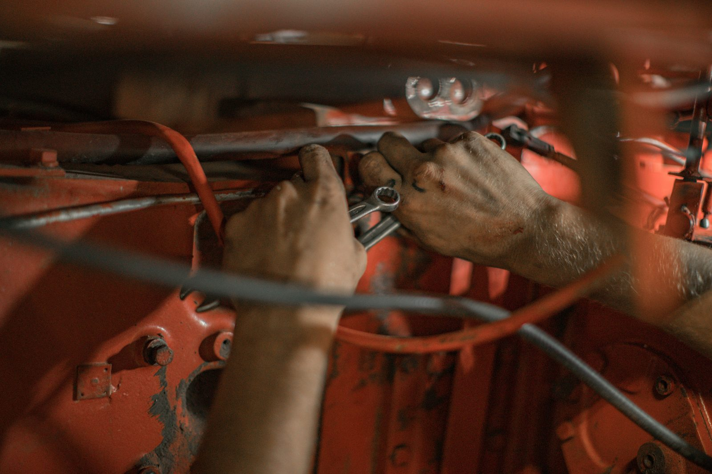
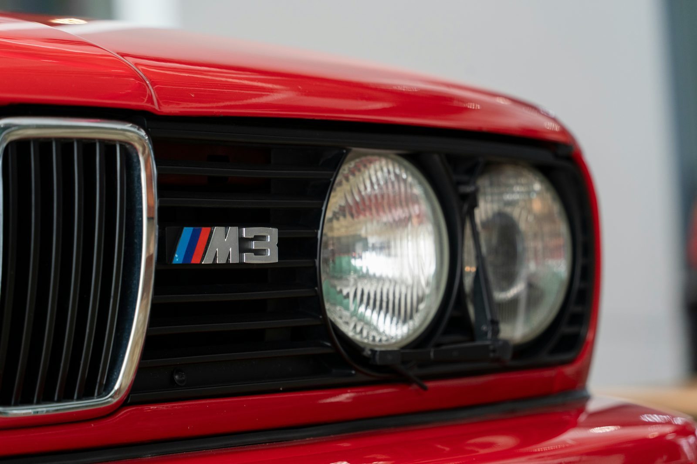

Garage documentary
The work
is the proof.
Photo-journal pacing. Large shop imagery, direct captions, and less marketing language.

Hands On
Care is visible.
Diagnostics and repairs are handled by paying attention to the details that usually get missed.

BMW Focus
Specialist knowledge. Practical service.
BMWs are the specialty, but the work standard applies to every vehicle that comes through.

Schedule service.
Send the vehicle and concern.